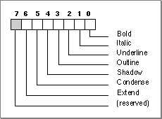

Legacy Document
Important: The information in this document is obsolete and should not be used for new development.
Important: The information in this document is obsolete and should not be used for new development.


Selectors for Script Variables
This section lists and describes the selector constants for accessing script variables through calls to theGetScriptVariableandSetScriptVariablefunctions. In every case the variable parameter passed to or from the function is a long integer (4 bytes); the column "Size of variable" indicates how many of the 4 bytes are necessary to hold the input or return value for that variable. If fewer than 4 bytes are needed, the low byte or low word contains the information.In many cases the value of a script variable is taken from the script system's international bundle (
'itlb') resource. See the appendix "International Resources" for a description of the international bundle resource.Descriptions of all the variables accessed by these constants follow the list.
Selector constant Variable description
Figure 6-7 Style code format
smScriptVersion- The script system's version number. When the Script Manager loads the script system, the script system puts its current version number into this variable. The high-order byte contains the major version number, and the low-order byte contains the minor version number.
smScriptMunged- The modification count for this script system's script variables. The Script Manager increments the variable accessed by the
smScriptMungedselector each time theSetScriptVariablefunction is called for this script system. You can check this variable at any time to see whether any of your own data structures that depend on this script system's script variables need to be updated.smScriptEnabled- The script-enabled flag, a Boolean value that indicates whether the script has been enabled. It is set to $FF when enabled and to 0 when not enabled. Note that this variable is not equivalent to the Script Manager variable accessed by the
smEnabledselector, which is a count of the total number of enabled script systems.smScriptRight- The right-to-left flag, a Boolean value that indicates whether the primary line direction for text in this script is right-to-left or left-to-right. It is set to $FF for right-to-left text (used in Arabic and Hebrew script systems) and to 0 for left-to-right (used in Roman and other script systems).
smScriptJust- The script alignment flag, a byte that specifies the default alignment for text in this script system. It is set to $FF for right alignment (common for Arabic and Hebrew), and it is set to 0 for left alignment (common for Roman and other script systems). This flag usually has the same value as the
smScriptRightflag.smScriptRedraw- The script-redraw flag, a byte that provides redrawing recommendations for text of this script system. It describes how much of a line should be redrawn when a user adds, inserts, or deletes text. It is set to 0 when only a character should be redrawn (used by the Roman script system), to 1 when an entire word should be redrawn (used by the Japanese script system), and to -1 when the entire line should be redrawn (used by the Arabic and Hebrew script systems). The following constants are available for the script-redraw flag:
Constant Value Explanation smRedrawChar 0 Redraw character only smRedrawWord 1 Redraw entire word smRedrawLine -1 Redraw entire line smScriptSysFond- The preferred system font, the font family ID of the system font preferred for this script. In the Roman script system, this variable specifies Chicago font, whose font family ID is 0 if Roman is the system script. The preferred system font in the Japanese script system is 16384, the font family ID for Osaka.
- This variable holds similar information to the variable accessed through the
smScriptSysFondSizeselector. However, changing the value of this variable has no effect on the value accessed throughsmScriptSysFondSize.- Note
- Remember that in all localized versions of system software the special value of 0 is remapped to the system font ID. Thus, if
an application running under Japanese system software specifies
a font family ID of 0 in a routine or in thetxFontfield of the current graphics port, Osaka will be used. However, the variable accessed bysmScriptSysFondwill still show the true ID for Osaka (16384).
smScriptAppFond- The preferred application font; the font family ID of the application font preferred for this script. In the Roman script system, the value of this variable is the font family ID for Geneva.
- This variable holds similar information to the variable accessed through the
smScriptAppFondSizeselector. However, changing the value of this variable has no effect on the value accessed throughsmScriptAppFondSize.- Note
- Remember that in all localized versions of system software the special value of 1 is remapped to the application font ID. For example, if an application running under Arabic system software specifies a font family ID of 1 in a routine, Nadeem will be used. However, the variable accessed by
smScriptSysFondwill still show the true ID for Nadeem (17926).smScriptNumber- The resource ID of the script's numeric-format (
'itl0') resource. The numeric-format resource includes formatting information for the correct display of numbers, times, and short dates. The value of this variable is initialized from the script system's international bundle resource. See the appendix "International Resources" for a description of the numeric-format resource.smScriptDate- The resource ID of the script's long-date-format (
'itl1') resource. The long-date-format resource includes formatting information for the correct display of long dates (dates that include month or day names). The value of this variable is initialized from the script system's international bundle resource. See the appendix "International Resources" for a description of the long-date-format resource.smScriptSort- The resource ID of the script's string-manipulation (
'itl2') resource. The string-manipulation resource contains routines for sorting and tables for word selection, line breaks, character types, and case conversion of text. The value of this variable is initialized from the script system's international bundle resource. See the appendix "International Resources" for a description of the string-manipulation resource.smScriptFlags- The script flags word, which contains bit flags specifying attributes of the script. The value of this variable is initialized from the script system's international bundle resourc
e. The following constants are available for examining attributes in the script flags word. Bits above 8 are nonstatic, meaning that they may change during program execution. (Note that the constant values represent bit numbers in the flags word, not masks.)- The smsfIntellCP flag is set if this script system uses spaces as word delimiters. In such a script system it is possible to implement intelligent cut and paste, in which extra spaces are removed when a word is cut from text, and any needed spaces are added when a word is pasted into text. Macintosh Human Interface Guidelines recommends that you implement intelligent cut and paste in script systems that support it.
- If you use the
CharToPixelfunction to determine text widths, such as for line breaking, you need to clear the smsfReverse bit first. For more information, see the chapter "QuickDraw Text" in this book.smScriptToken- The resource ID of the script's tokens (
'itl4') resource. The tokens resource contains information for tokenizing and number formatting. The value of this variable is initialized from the script system's international bundle resource. See the appendix "International Resources" in this book for a description of the tokens resource.smScriptEncoding- The resource ID of the script's (optional) encoding/rendering (
'itl5') resource. For 1-byte scripts, the encoding/rendering resource specifies text-rendering behavior; for 2-byte scripts, it specifies character-encoding information. The value of this variable is taken from the script system's international bundle resource. See the appendix "International Resources" for a description of the encoding/rendering resource.smScriptLang- The language code for this version of the script. A language is a specialized variation of a specific script system. Constants for
all defined language codes are listed on page 6-54. The value of this variable is initialized from the script system's international bundle resource.smScriptNumDate- The numeral code and calendar code for the script. The numeral code specifies the kind of numerals the script uses, and is in the high-order byte of the word; the calendar code specifies the type of calendar it uses and is in the low-order byte of the word. The value of this variable is initialized from the script system's international bundle resource. It may be changed during execution when the
user selects, for example, a new calendar from a script system's control panel.- The following numeral-code constants are available for specifying numerals. Note that they are bit numbers, not masks:
- The following calendar-code constants are available for specifying calendars. Note that they are bit numbers, not masks:
smScriptKeys- The resource ID of the script's current keyboard-layout (
'KCHR') resource. The keyboard-layout resource is used to map virtual key codes into the correct character codes for the script; it is described in the appendix "Keyboard Resources" in this book. The value of this variable is initialized from the script system's international bundle resource. It is updated when the user selects a new keyboard layout, or when the application calls theKeyScriptprocedure. You can force a particular keyboard layout to be used with your application by setting the value of this variable and then callingKeyScript.smScriptIcon- The resource ID of the script's keyboard icon family (resource types
'kcs#','kcs4', and'kcs8'). The keyboard icon family consists of the keyboard icons displayed in the keyboard menu; it is described in the appendix "Keyboard Resources" in this book. The value of this variable is initialized from the script system's international bundle resource. Note that, unlikesmScriptKeys, the value of this variable is not automatically updated when the keyboard layout changes. (System software assumes that the icon family has an identical ID to the keyboard-layout resource, and usually ignores this variable.)smScriptPrint- The print action routine vector, set up by the script system (or by the Script Manager if the
smsfAutoInitbit is set) when the script is initialized. See Inside Macintosh: Devices for information on the print action routine.smScriptTrap- A pointer to the script's script-record dispatch routine (for internal use only).
smScriptCreator- The 4-character creator type for the script system's file, that is, the file containing the script system. For the Roman script system, it is
'ZSYS', for WorldScript I it is'univ', and for World Script II it is'doub'.smScriptFile- A pointer to the Pascal string that contains the name of the script system's file, that is, the file containing the script system. For the Roman script system, the string is
'System'.smScriptName- A pointer to a Pascal string that contains the script system's name. For the Roman script system and 1-byte simple script systems, the string is
'Roman'. For 1-byte complex script systems, this name is taken from the encoding/rendering ('itl5') resource. For 2-byte script systems, it is taken from the WorldScript II extension and is'WorldScript II'.smScriptMonoFondSize- The default font family ID and size (in points) for monospaced text. The ID is stored in the high-order word, and the size is stored in the low-order word. The value of this variable is taken from the script system's international bundle resource. Note that not all script systems have a monospaced font.
smScriptPrefFondSize- Currently not used.
smScriptSmallFondSize- The default font family ID and size (in points) for small text, generally the smallest font and size combination that is legible on screen. The ID is stored in the high-order word, and the size is stored in the low-order word. Sizes are important; for example, a 9-point font may be too small in Chinese. The value of this variable is taken from the script system's international bundle resource.
smScriptSysFondSize- The default font family ID and size (in points) for this script system's preferred system font. The ID is stored in the high-order word, and the size is stored in the low-order word. The value of this variable is taken from the script system's international bundle resource.
- This variable holds similar information to the variable accessed through the smScriptSysFond selector. If you neeed font family ID only and don't want size information, it is simpler to use smScriptSysFond. Note, however, that changing the value of this variable has no effect on the value accessed through smScriptSysFond
.smScriptAppFondSize- The default font family ID and size (in points) for this script system's preferred application font. The ID is stored in the high-order word, and the size is stored in the low-order word. The value of this variable is taken from the script system's international bundle resource.
- This variable holds similar information to the variable accessed through the smScriptAppFond selector. If you neeed font family ID only and don't want size information, it is simpler to use smScriptAppFond. Note, however, that changing the value of this variable has no effect on the value accessed through smScriptAppFond.
smScriptHelpFondSize- The default font family ID and size (in points) for Balloon Help. The ID is stored in the high-order word, and the size is stored in the low-order word. Sizes are important; for example, a 9-point font may be too small in Chinese. The value of this variable is taken from the script system's international bundle resource.
smScriptValidStyles- The set of all valid styles for the script. For example, the Extended style is not valid in the Arabic script. When the
GetScriptVariablefunction is called with thesmScriptValidStylesselector, the low-order byte of the returned value is a style code that includes all of the valid styles for the script (that is, the bit corresponding to each QuickDraw style is set if that style is valid for the specified script). See Figure 6-7.
The value of this variable is taken from the script system's international bundle resource.
smScriptAliasStyle
The style to use for indicating aliases. When theGetScriptVariablefunction is called with smScriptAliasStyle, the low-order byte of the returned value is the style code (see Figure 6-7) that should be used in that script for indicating alias names (for example, in the Roman script system, alias names are indicated in italics). The value of this variable is taken from the script system's international bundle resource.- Note
- Some script systems, such as Arabic and Hebrew, have private script-system selectors that are unique to those scripts. Those private selectors are negative, whereas selectors that extend across script systems are positive.